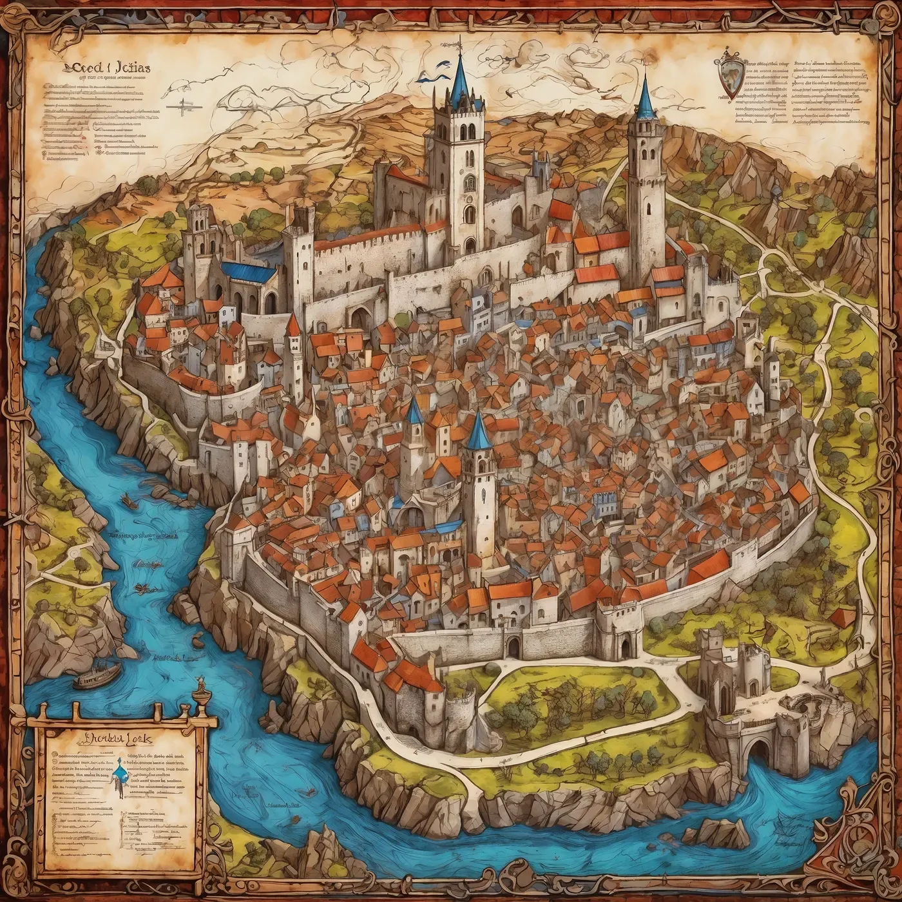

- Klasifikace
- Davidova vlastní IP
- Role
- Koncept, copy, web, QA
- Kontakt projektu
- mediator@hightribunal.com
Situace
Community nebyla jedna značka ani jedna stránka. Šlo o svět s pravidly, rolemi, postupem, institucemi a mnoha vrstvami významu. Hlavním rizikem nebyl nedostatek nápadů, ale jejich přebytek.
Moje role
Jsem tvůrce a vlastník projektu. Držím narativní architekturu, veřejnou copy, výběr médií, statický frontend, dvojjazyčnou paritu, formulářovou logiku, deployment konfiguraci a responzivní QA.
Výstupy
- Jedenáct scén anglické a české landing page.
- Vlastní vizuální a institucionální jazyk.
- Same-origin formuláře a produkční hosting bundle.
- Samostatná cesta In Kinship & Glory, která z hustého světa vytváří jeden srozumitelný quest.

Co to dokazuje
Nejen schopnost vytvořit atmosféru, ale udržet velké množství kontextu, rozhodnutí a technických detailů v jednom nasaditelném celku.
Podobný problém
Máte projekt s výjimečnou myšlenkou, ale běžná agenturní šablona by z něj udělala zaměnitelný produkt? Právě tam dává smysl kombinace struktury, médií a autorské režie.
Pro komerční spolupráci kontaktujte Davida.
Kontakt Community zůstává oddělený: X @MediatorTHT a mediator@hightribunal.com.
Probrat vlastní projekt ↗